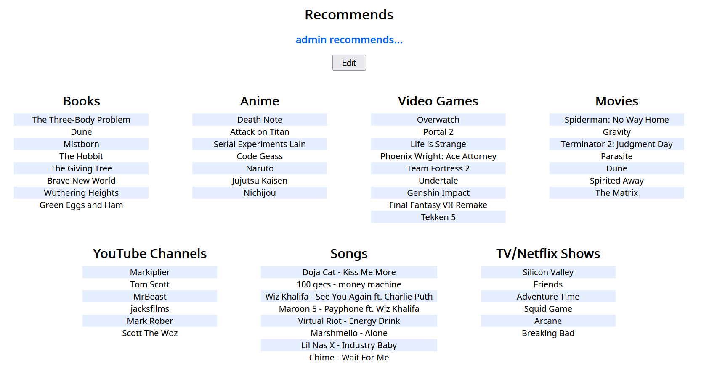
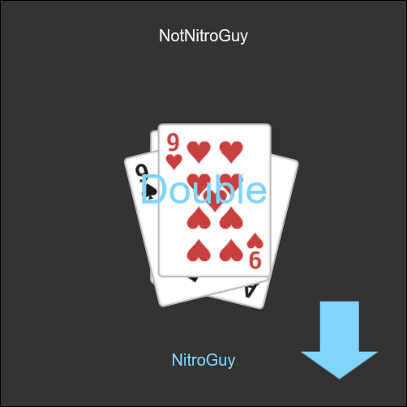

Portfolio
This is an abridged, more formal list of my personal projects including software, plugins, webpages, microcontroller projects, et cetera. If you would like some personal commentary about each project, visit my main projects article, though please note its tone is much more informal and conversational. Let me know if you have questions about anything.
Most of these projects are on my GitHub.
recommends
25 December 2021 - 4 January 2022
Python, HTML, CSS, JavaScript - Flask, Jinja, SQLite, PyNaCl
A social media-esque site where users can recommend books, movies, etc. to their friends. prydt and I made this in a couple days during winter break. I mainly worked on the frontend and pry worked on the login and database.
overthere

19 December 2021 - 24 December 2021
Python, HTML, CSS, JavaScript - Flask, SQLite
overthere is a clone of bit.ly and tinyurl that lets you post multiple links on one page. It also has fun, memorable URLs like "exquisite-cow". Link pages are stored in a SQLite database.
Supremely_Hexagonal

28 October 2021 - 1 November 2021
Java - Processing
Supremely_Hexagonal is a simplistic remake of the game Super Hexagon by Terry Cavanagh in Processing.
VEGAS Scripts/Plugins

26 July - 16 August 2021
C# - Windows Forms, VEGAS Pro Script API
Various scripts/plugins for MAGIX VEGAS Pro. Plugins are written in C# and use Windows Forms for GUI. Plugins include a "screen shake" effect, a "chromatic aberration" effect, and a plugin that can animate any parameter of a video effect based on an oscillator, random number generator, or noise.
nitroguy10.github.io
11 December 2016 - Ongoing
Python, HTML, Sass, JavaScript - Jinja, JSON
My website is my oldest still-ongoing project. What makes it unique is that, as a music producer, I want a sort of "encyclopedia" of all the songs and albums I have made. I accomplished this with the template engine Jinja and a large JSON file with information about all my songs. Whenever I update the templates or data file, I run a Python script to generate all the necessary pages for my website. The stylesheets are done using Sass.
If you're looking for something to read, I've written a blog post about the process of making this website Once again, it is very informal.
ERS-OL
24 June - 3 July 2021
Python, HTML, CSS, JavaScript - Flask, Socket.io
ERS-OL (Egyptian Rat Screw Online) is an online multiplayer web game version of my favorite card game, Egyptian Rat Screw. Server-client communication is done with Socket.io. Animations are done on the client side using the HTML5 canvas.
RoundUp

7 May - 23 May 2021
Python
RoundUp is a command-line tool that copies all files from a directory tree into a single folder. The README does a better job of explaining this so check it out if you're interested. This was created as a quick solution to automate a process I often have had to do manually.
tuscon
21 March - 9 April 2021
Python - BeautifulSoup
tuscon (yes, you read that right) is a super-simple web-templating library. All it is is HTML files with parameters, if statements, and for loops.
Pi555
ca. 2016 - 22 December 2019
Java - MIDICSV, Pi4J, Raspberry Pi GPIO
Pi555 was my first big microcontroller project. It takes in MIDI files as input and plays a song using the square wave generated from a 555 chip. A Java program reads through a MIDI file and translates it into something that the "music player" Java program can use. This "music player" program, which ran on a Raspberry Pi plays the correct notes at the correct times on the 555 timer by sending bytes to the digital potentiometer through its GPIO pins.
Jumpy

17 April 2017 - 4 December 2018
HTML, CSS, JavaScript
Jumpy is a game I "made" by half following a tutorial and half doing my own thing. I was a rather unexperienced but quickly-learning programmer at the time and I remember being so happy when I made a nested for-loop that read through the 2D arrays that stored the levels. The game itself is a pretty basic HTML5 canvas web game. It also has a fully-featured level creator.
CalcGames


TI-Basic
There's a huge active community dedicated to programming for TI-84 calculators, and I decided to take part by making some of my own games.
The Sass

Not a coding project, but I've been producing electronic music since 2015 as a side-hobby.